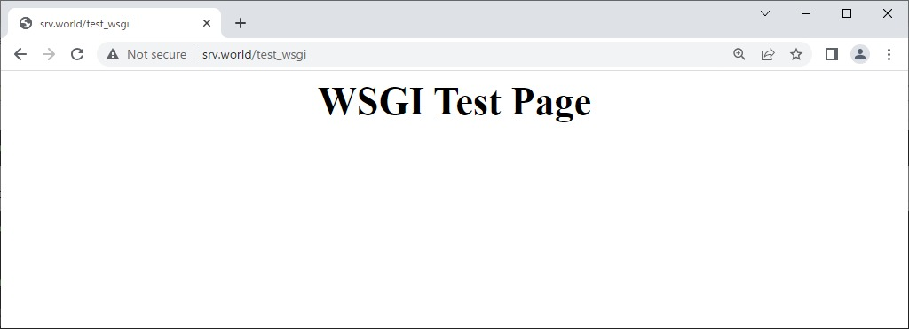
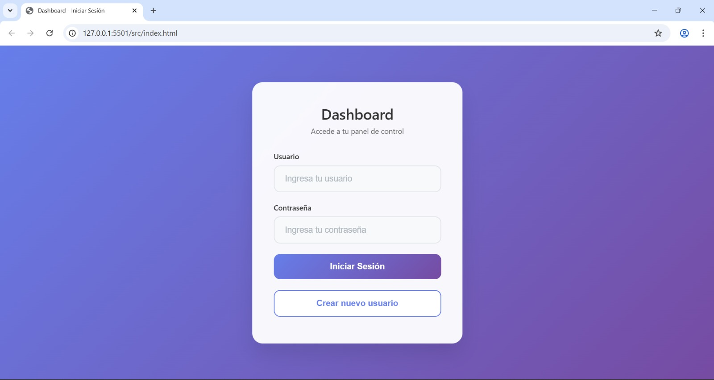
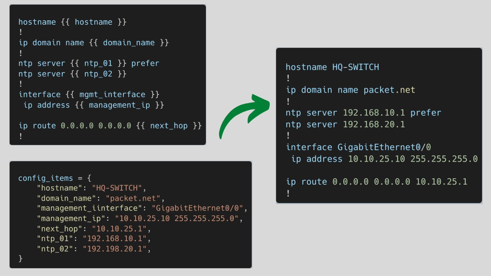
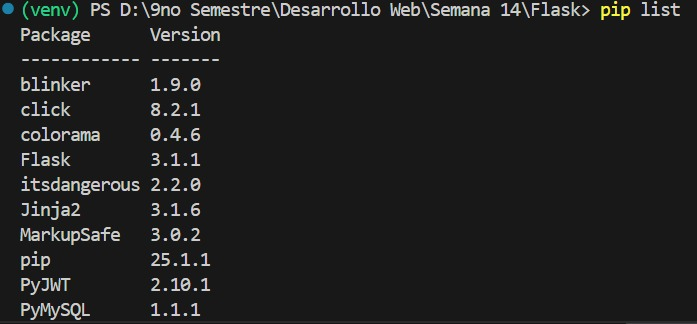

Stack: Python - Flask

Definición y Conceptos Clave
Este documento explora el desarrollo de aplicaciones web backend utilizando Python y el microframework Flask.
Apache HTTP Server:
Conocido como "Apache", es un servidor web de código abierto cuya función principal es entregar contenido web a los usuarios. Recibe solicitudes HTTP/HTTPS del navegador, busca el contenido solicitado (HTML, imágenes, etc.) en el servidor y lo envía de vuelta al navegador. Apache Lounge es una comunidad que proporciona versiones compiladas de Apache para sistemas operativos Windows.
MOD_WSGI:
Es un módulo para el servidor Apache que permite ejecutar aplicaciones web escritas en Python. Facilita que frameworks como Flask o Django funcionen directamente dentro de Apache.
Python:
Un lenguaje de programación interpretado y multiparadigma (orientado a objetos, funcional e imperativo), de tipado dinámico. Transforma el código fuente a bytecode (.pyc), que es interpretado por la máquina virtual de Python para una ejecución rápida. Es ampliamente utilizado en educación, ciencia de datos, inteligencia artificial, desarrollo de software, desarrollo web, automatización e IoT.
PIP (Python Installs Packages):
Es el gestor de paquetes oficial de Python, utilizado para instalar, actualizar y desinstalar bibliotecas externas desde el repositorio PyPI.
PEP-8:
Es la guía de estilo de Python, que promueve la legibilidad del código mediante reglas de indentación (4 espacios), longitud de línea, convenciones de nombres (ej. snake_case para funciones, PascalCase para clases) y organización de importaciones.
Flask Framework
Es un microframework de desarrollo web ligero, flexible y fácil de usar, escrito en Python. Sigue el patrón MVC, incluye un servidor de desarrollo integrado y soporta pruebas unitarias. Permite definir rutas con @app.route y es compatible con Python 3 y el protocolo WSGI.
@app.route:
Un decorador para definir las URL que activan funciones específicas en la aplicación.
from flask import Flask
app = Flask(__name__)
@app.route('/')
def home():
return '¡Hola Mundo desde Flask!'
@app.route('/usuario/<nombre>')
def mostrar_usuario(nombre):
return f'¡Hola, {nombre}!'
@app.route('/posts/<int:post_id>')
def mostrar_post(post_id):
return f'Post ID: {post_id}'
@app.route('/api/usuarios', methods=['GET', 'POST'])
def api_usuarios():
if request.method == 'POST':
return 'Crear nuevo usuario'
return 'Listar usuarios'
if __name__ == '__main__':
app.run(debug=True)request:
Un objeto que representa los datos enviados por el cliente.
from flask import Flask, request, jsonify
app = Flask(__name__)
@app.route('/login', methods=['POST'])
def login():
# Obtener datos del formulario
username = request.form.get('username')
password = request.form.get('password')
# Obtener datos JSON
if request.is_json:
data = request.get_json()
username = data.get('username')
password = data.get('password')
# Obtener parámetros de la URL
remember_me = request.args.get('remember', False)
# Obtener headers
user_agent = request.headers.get('User-Agent')
if username == 'admin' and password == 'secret':
return jsonify({
'success': True,
'message': 'Login exitoso',
'user_agent': user_agent
})
return jsonify({'success': False, 'message': 'Credenciales inválidas'}), 401
@app.route('/upload', methods=['POST'])
def upload_file():
if 'file' not in request.files:
return 'No se seleccionó archivo'
file = request.files['file']
if file.filename == '':
return 'No se seleccionó archivo'
if file:
filename = secure_filename(file.filename)
file.save(os.path.join(app.config['UPLOAD_FOLDER'], filename))
return 'Archivo subido exitosamente'render_template:
Una función que renderiza archivos HTML utilizando Jinja2.
from flask import Flask, render_template
app = Flask(__name__)
@app.route('/')
def index():
usuarios = [
{'nombre': 'Ivan Paul', 'email': 'ivan@example.com'},
{'nombre': 'María García', 'email': 'maria@example.com'},
{'nombre': 'Carlos López', 'email': 'carlos@example.com'}
]
return render_template('index.html',
titulo='Mi Aplicación Flask',
usuarios=usuarios,
total_usuarios=len(usuarios))
@app.route('/perfil/<username>')
def perfil_usuario(username):
# Simular datos del usuario
usuario = {
'nombre': username.title(),
'email': f'{username}@example.com',
'fecha_registro': '2024-01-15',
'activo': True
}
return render_template('perfil.html', usuario=usuario)
@app.route('/dashboard')
def dashboard():
estadisticas = {
'usuarios_totales': 150,
'posts_publicados': 45,
'comentarios': 230,
'visitas_hoy': 1250
}
return render_template('dashboard.html', stats=estadisticas)Jinja2 - Motor de Plantillas
Jinja2 es un motor de plantillas que permite incrustar lógica en archivos HTML, utilizado para generar contenido dinámico y separar la lógica del programa de la presentación visual. Soporta estructuras de control (condicionales, bucles), herencia de plantillas, filtros y macros.
Template Base (base.html):
<!DOCTYPE html>
<html lang="es">
<head>
<meta charset="UTF-8">
<meta name="viewport" content="width=device-width, initial-scale=1.0">
<title>{% block title %}Mi App Flask{% endblock %}</title>
<link href="https://cdn.jsdelivr.net/npm/bootstrap@5.1.3/dist/css/bootstrap.min.css" rel="stylesheet">
</head>
<body>
<nav class="navbar navbar-expand-lg navbar-dark bg-dark">
<div class="container">
<a class="navbar-brand" href="{{ url_for('index') }}">Mi App</a>
<div class="navbar-nav">
<a class="nav-link" href="{{ url_for('index') }}">Inicio</a>
<a class="nav-link" href="{{ url_for('dashboard') }}">Dashboard</a>
</div>
</div>
</nav>
<div class="container mt-4">
{% with messages = get_flashed_messages(with_categories=true) %}
{% if messages %}
{% for category, message in messages %}
<div class="alert alert-{{ 'danger' if category == 'error' else category }}">
{{ message }}
</div>
{% endfor %}
{% endif %}
{% endwith %}
{% block content %}{% endblock %}
</div>
<script src="https://cdn.jsdelivr.net/npm/bootstrap@5.1.3/dist/js/bootstrap.bundle.min.js"></script>
</body>
</html>Template de Lista (index.html):
{% extends "base.html" %}
{% block title %}{{ titulo }} - Lista de Usuarios{% endblock %}
{% block content %}
<h1>{{ titulo }}</h1>
<p>Total de usuarios: <strong>{{ total_usuarios }}</strong></p>
{% if usuarios %}
<div class="row">
{% for usuario in usuarios %}
<div class="col-md-4 mb-3">
<div class="card">
<div class="card-body">
<h5 class="card-title">{{ usuario.nombre }}</h5>
<p class="card-text">{{ usuario.email }}</p>
<a href="{{ url_for('perfil_usuario', username=usuario.nombre.lower().replace(' ', '')) }}"
class="btn btn-primary">Ver Perfil</a>
</div>
</div>
</div>
{% if loop.index % 3 == 0 %}
</div><div class="row">
{% endif %}
{% endfor %}
</div>
{% else %}
<div class="alert alert-info">
No hay usuarios registrados.
</div>
{% endif %}
<!-- Filtros de Jinja2 -->
<div class="mt-4">
<h3>Ejemplos de Filtros</h3>
<ul>
<li>Fecha actual: {{ moment().format('YYYY-MM-DD') }}</li>
<li>Texto en mayúsculas: {{ "hola mundo" | upper }}</li>
<li>Longitud de lista: {{ usuarios | length }}</li>
<li>Primer usuario: {{ usuarios | first }}</li>
<li>Último usuario: {{ usuarios | last }}</li>
</ul>
</div>
{% endblock %}Macros y Funciones Reutilizables:
<!-- macros.html -->
{% macro render_field(field, label_class="", field_class="") %}
<div class="mb-3">
{{ field.label(class=label_class) }}
{{ field(class=field_class) }}
{% if field.errors %}
{% for error in field.errors %}
<div class="text-danger">{{ error }}</div>
{% endfor %}
{% endif %}
</div>
{% endmacro %}
{% macro render_pagination(pagination, endpoint) %}
{% if pagination.pages > 1 %}
<nav>
<ul class="pagination">
{% if pagination.has_prev %}
<li class="page-item">
<a class="page-link" href="{{ url_for(endpoint, page=pagination.prev_num) }}">Anterior</a>
</li>
{% endif %}
{% for page_num in pagination.iter_pages() %}
{% if page_num %}
{% if page_num != pagination.page %}
<li class="page-item">
<a class="page-link" href="{{ url_for(endpoint, page=page_num) }}">{{ page_num }}</a>
</li>
{% else %}
<li class="page-item active">
<span class="page-link">{{ page_num }}</span>
</li>
{% endif %}
{% else %}
<li class="page-item disabled">
<span class="page-link">...</span>
</li>
{% endif %}
{% endfor %}
{% if pagination.has_next %}
<li class="page-item">
<a class="page-link" href="{{ url_for(endpoint, page=pagination.next_num) }}">Siguiente</a>
</li>
{% endif %}
</ul>
</nav>
{% endif %}
{% endmacro %}Aplicación Flask Completa
Ejemplo de una aplicación Flask con múltiples funcionalidades:
# app.py
from flask import Flask, render_template, request, redirect, url_for, flash, jsonify
from flask_sqlalchemy import SQLAlchemy
from flask_login import LoginManager, UserMixin, login_user, logout_user, login_required, current_user
from flask_wtf import FlaskForm
from wtforms import StringField, PasswordField, TextAreaField, SubmitField
from wtforms.validators import DataRequired, Email, Length
from werkzeug.security import generate_password_hash, check_password_hash
import os
from datetime import datetime
# Configuración de la aplicación
app = Flask(__name__)
app.config['SECRET_KEY'] = 'tu-clave-secreta-aqui'
app.config['SQLALCHEMY_DATABASE_URI'] = 'sqlite:///blog.db'
app.config['SQLALCHEMY_TRACK_MODIFICATIONS'] = False
# Inicialización de extensiones
db = SQLAlchemy(app)
login_manager = LoginManager()
login_manager.init_app(app)
login_manager.login_view = 'login'
# Modelos de base de datos
class User(UserMixin, db.Model):
id = db.Column(db.Integer, primary_key=True)
username = db.Column(db.String(80), unique=True, nullable=False)
email = db.Column(db.String(120), unique=True, nullable=False)
password_hash = db.Column(db.String(120), nullable=False)
posts = db.relationship('Post', backref='author', lazy=True)
def set_password(self, password):
self.password_hash = generate_password_hash(password)
def check_password(self, password):
return check_password_hash(self.password_hash, password)
class Post(db.Model):
id = db.Column(db.Integer, primary_key=True)
title = db.Column(db.String(100), nullable=False)
content = db.Column(db.Text, nullable=False)
date_posted = db.Column(db.DateTime, default=datetime.utcnow)
user_id = db.Column(db.Integer, db.ForeignKey('user.id'), nullable=False)
# Formularios
class LoginForm(FlaskForm):
username = StringField('Usuario', validators=[DataRequired()])
password = PasswordField('Contraseña', validators=[DataRequired()])
submit = SubmitField('Iniciar Sesión')
class PostForm(FlaskForm):
title = StringField('Título', validators=[DataRequired(), Length(min=1, max=100)])
content = TextAreaField('Contenido', validators=[DataRequired()])
submit = SubmitField('Publicar')
@login_manager.user_loader
def load_user(user_id):
return User.query.get(int(user_id))
# Rutas
@app.route('/')
def index():
posts = Post.query.order_by(Post.date_posted.desc()).all()
return render_template('index.html', posts=posts)
@app.route('/login', methods=['GET', 'POST'])
def login():
form = LoginForm()
if form.validate_on_submit():
user = User.query.filter_by(username=form.username.data).first()
if user and user.check_password(form.password.data):
login_user(user)
flash('Inicio de sesión exitoso', 'success')
return redirect(url_for('dashboard'))
flash('Usuario o contraseña incorrectos', 'error')
return render_template('login.html', form=form)
@app.route('/dashboard')
@login_required
def dashboard():
user_posts = Post.query.filter_by(user_id=current_user.id).all()
return render_template('dashboard.html', posts=user_posts)
@app.route('/create_post', methods=['GET', 'POST'])
@login_required
def create_post():
form = PostForm()
if form.validate_on_submit():
post = Post(
title=form.title.data,
content=form.content.data,
user_id=current_user.id
)
db.session.add(post)
db.session.commit()
flash('Post creado exitosamente', 'success')
return redirect(url_for('dashboard'))
return render_template('create_post.html', form=form)
@app.route('/api/posts')
def api_posts():
posts = Post.query.all()
return jsonify([{
'id': post.id,
'title': post.title,
'content': post.content,
'author': post.author.username,
'date_posted': post.date_posted.isoformat()
} for post in posts])
@app.route('/logout')
@login_required
def logout():
logout_user()
flash('Sesión cerrada exitosamente', 'info')
return redirect(url_for('index'))
if __name__ == '__main__':
with app.app_context():
db.create_all()
app.run(debug=True)Ejemplos Prácticos y Capturas
A continuación se muestran ejemplos prácticos de las tecnologías y conceptos aprendidos:
📸 Captura 1: Configuración de Apache con MOD_WSGI
📸 Captura 2: Aplicación Flask en funcionamiento
📸 Captura 3: Templates Jinja2 renderizados
📸 Captura 4: Gestión de paquetes con PIP
Tecnologías Aprendidas
Lenguajes/Frameworks:
- Python
- Flask
- Django
Servidores Web/Módulos:
- Apache HTTP Server
- MOD_WSGI
Gestores de Paquetes:
- PIP
Motores de Plantillas:
- Jinja2
Bases de Datos:
- MySQL
- pymysql
Extensiones de Flask:
- Flask-SQLAlchemy
- Flask-Login
- Flask-WTF
- Flask-Migrate
Conceptos de Programación Python:
- Programación Orientada a Objetos (POO)
- Manejo de excepciones
- Funciones lambda
- Diccionarios, listas y tuplas
Código Fuente y Recursos
Ver Código Fuente Completo
Accede al repositorio completo con la aplicación Python Flask desarrollada en la Semana 14.
📁 Contenido del Repositorio
-
Aplicación Python Completa
Proyecto web desarrollado con Python y mejores prácticas
-
Microframework Flask
Aplicación web ligera y eficiente con Flask
-
Templates Jinja2
Sistema de plantillas dinámicas con Jinja2
-
ORM SQLAlchemy
Manejo de base de datos con SQLAlchemy
-
Documentación Python
Guías de desarrollo y configuración del entorno
Reflexión Personal
Esta semana me introdujo al ecosistema Python para desarrollo web, una experiencia reveladora que me mostró la elegancia y simplicidad que caracterizan a este lenguaje. Flask, como microframework, me enseñó los fundamentos del desarrollo web sin la complejidad de frameworks más pesados.
La filosofía de Python, expresada en PEP-8, me hizo valorar la importancia de escribir código limpio y legible. La sintaxis clara y la estructura lógica del lenguaje aceleraron significativamente mi curva de aprendizaje comparado con otros lenguajes backend que había usado.
Jinja2 como motor de plantillas me impresionó por su flexibilidad y poder. La capacidad de crear templates reutilizables con herencia, macros y filtros me permitió construir interfaces dinámicas de manera eficiente. La separación clara entre lógica y presentación mejoró la organización de mis proyectos.
El sistema de decoradores de Flask (@app.route) me pareció intuitivo y elegante para definir rutas. La integración con extensiones como Flask-SQLAlchemy y Flask-Login demostró la modularidad del ecosistema Python, donde cada componente tiene una responsabilidad específica.
MOD_WSGI me enseñó cómo desplegar aplicaciones Python en servidores de producción como Apache, conocimiento crucial para llevar mis aplicaciones del desarrollo a la producción. La configuración, aunque inicialmente compleja, me dio una comprensión profunda de cómo funcionan los servidores web.
PIP como gestor de paquetes simplificó enormemente la gestión de dependencias, similar a npm o Composer, pero con la particularidad de los entornos virtuales de Python que me ayudaron a mantener proyectos aislados y organizados.
Esta semana consolidó mi comprensión del desarrollo backend con Python, proporcionándome una alternativa poderosa y elegante a los otros stacks que había aprendido, especialmente valorando la legibilidad y simplicidad del código Python.